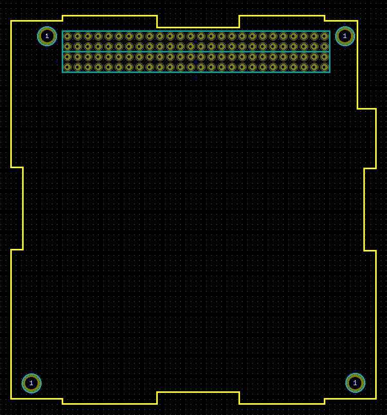

This project provides the base template to create a board for use in a CubeSat using a CubeSat Kit frame and bus architecture.
The bus connectors utilize a 0.48in tail below the board for a board-to-board connection.
The following connectors should be used with the
The board outline looks like the following:

Template (c)2015 Ian McInerney. Board outline based upon ClydeSpace EPS board outlines.